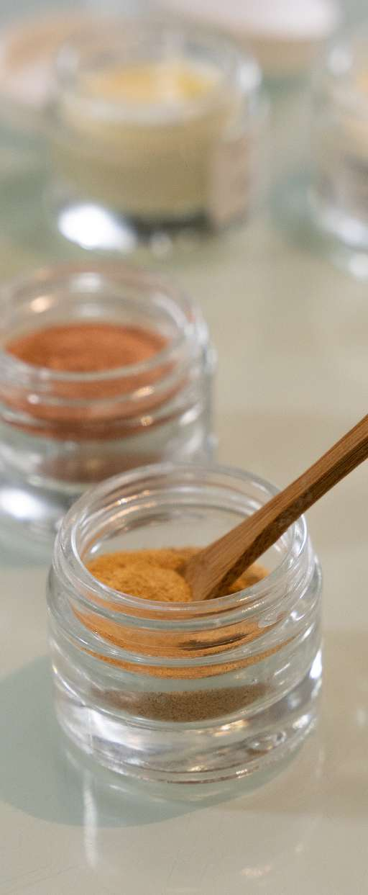

Aqua, Sodium Cocoyl Glutamate, Glycerin, Decyl Glucoside, Lauryl Glucoside, Propylene Glycol, Sodium Chloride, Tamarindus Indica Seed Gum, Parfum (Fragrance), Sodium Benzoate, Guar Hydroxypropyltrimonium Chloride, Potassium Sorbate, Xanthan Gum, Inulin, Aloe Barbadensis Leaf Juice Powder, Linalool, Limonene, Benzyl Salicylate, Camellia Oleifera Seed Oil, Pongamia Glabra Seed Oil
98,6 % des ingrédients sont d'origine naturelle.
Aqua, Cetearyl Alcohol, Glycerin, Betaine, Glyceryl Stearate, Behentrimonium Chloride, Butyrospermum Parkii Butter, Neopentyl Glycol Diheptanoate, Parfum, Polyquaternium-10, Isododecane, Camellia Oleifera Seed Oil, Inulin, Pongamia Glabra Seed Oil, Ricinus Communis Seed Oil, Guar Hydroxypropyltrimonium Chloride, Levulinic Acid, Sodium Benzoate, Potassium Sorbate, Xanthan Gum, Sodium Levulinate, Helianthus Annuus Seed Oil, Tocopherol, Aloe Barbadensis Leaf Juice Powder, Linalool, Limonene, Benzyl Salicylate
95 % des ingrédients sont d'origine naturelle.
Aqua, Cetearyl Alcohol, Glycerin, Betaine, Behentrimonium Chloride, Butyrospermum Parkii Butter, Parfum, Neopentyl Glycol Diheptanoate, Camellia Oleifera Seed Oil, Pongamia Glabra Seed Oil, Ricinus Communis Seed Oil, Levulinic Acid, Sodium Benzoate, Isododecane, Potassium Sorbate, Guar Hydroxypropyltrimonium Chloride, Xanthan Gum, Polyquaternium-10, Sodium Levulinate, Helianthus Annuus Seed Oil, Tocopherol, Aloe Barbadensis Leaf Juice Powder, Linalool, Limonene, Benzyl Salicylate, Alpha-Isomethyl Ionone, Citronellol, Coumarin, Citral
96,2 % des ingrédients sont d'origine naturelle.
Aqua, Sodium Cocoyl Glutamate, Glycerin, Decyl Glucoside, Lauryl Glucoside, Propylene Glycol, Sodium Chloride, Tamarindus Indica Seed Gum, Parfum (Fragrance), Sodium Benzoate, Guar Hydroxypropyltrimonium Chloride, Potassium Sorbate, Xanthan Gum, Inulin, Aloe Barbadensis Leaf Juice Powder, Linalool, Limonene, Benzyl Salicylate, Camellia Oleifera Seed Oil, Pongamia Glabra Seed Oil
Base commune : Aqua, Sodium Lauroyl Methyl Isethionate, Sodium Methyl Oleoyl Taurate, Cocamidopropyl Betaine, Glycerin, Sodium Chloride, Acrylates Copolymer, Parfum, Guar Hydroxypropyltrimonium Chloride, Levulinic Acid, Trisodium Ethylenediamide Disuccinate, Sodium Levulinate, Sodium Benzoate, Hydrolyzed Wheat Protein, Hydrolyzed Vegetable Protein, Mica, Ci 77891.
Colorants ajoutés selon la teinte :
% d'ingrédients d'origine naturelle indiqué par teinte.
Base commune : Aqua, Glycerin, Cetyl Alcohol, Cetearyl Alcohol, Butyrospermum Parkii Butter*, Betaine, Neopentyl Glycol Diheptanoate, Cetrimonium Chloride, Isododecane, Benzyl Alcohol, Ricinus Communis Seed Oil, Parfum, Polyquaternium-10, Dicaprylyl Ether, Lauryl Alcohol, Guar Hydroxypropyltrimonium Chloride, Citric Acid, Dehydroacetic Acid, Hydrolyzed Vegetable Protein, Hydrolyzed Wheat Protein, Sodium Benzoate, Tocopherol.
Colorants ajoutés selon la teinte :
≈ 93 – 95 % des ingrédients sont d'origine naturelle selon la teinte.